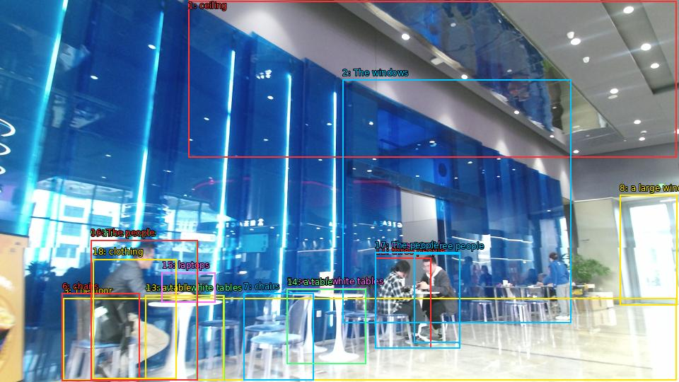

The image shows the interior of a modern building with a high ceiling and large windows. The windows are covered in blue glass panels that create a futuristic and futuristic look. The floor is made of marble and there are several white tables and chairs scattered throughout the space. On the left side of the image, there is a large window that lets in natural light and offers a view of the city. In the center of the room, there are three people sitting at a table with laptops and other electronic devices. The people are dressed in casual clothing and appear to be engaged in conversation. The overall atmosphere of the space is bright and airy.

Original · Caption raw · Grounding raw · Koordinate
Številke so lokalni ID regije. Dolge slikovne oznake so skrajšane; spodaj so celotne fraze. Napovedane regije se lahko prekrivajo ali opisujejo skupine.
| ID | Celotna fraza | bbox xyxy |
|---|---|---|
| 1 | ceiling | [266.3999938964844, 1.350000023841858, 956.6399536132812, 222.75001525878906] |
| 2 | The windows | [484.3199768066406, 112.59000396728516, 807.8399658203125, 456.030029296875] |
| 3 | The floor | [89.75999450683594, 421.47003173828125, 956.6399536132812, 537.5700073242188] |
| 4 | several white tables | [205.9199981689453, 417.1500244140625, 317.2799987792969, 537.5700073242188] |
| 5 | several white tables | [405.6000061035156, 407.9700012207031, 517.9199829101562, 514.8900146484375] |
| 6 | chairs | [87.83999633789062, 414.9900207519531, 197.27999877929688, 538.1100463867188] |
| 7 | chairs | [344.1600036621094, 414.9900207519531, 443.03997802734375, 537.5700073242188] |
| 8 | a large window | [876.0, 275.6700134277344, 957.5999755859375, 431.19000244140625] |
| 9 | three people | [128.16000366210938, 339.9300231933594, 278.8800048828125, 537.030029296875] |
| 10 | three people | [530.3999633789062, 357.21002197265625, 650.3999633789062, 492.7500305175781] |
| 11 | three people | [530.3999633789062, 364.77001953125, 609.1199951171875, 492.7500305175781] |
| 12 | three people | [585.1199951171875, 358.2900085449219, 650.3999633789062, 484.6500244140625] |
| 13 | a table | [205.9199981689453, 417.1500244140625, 316.32000732421875, 537.5700073242188] |
| 14 | a table | [405.6000061035156, 408.510009765625, 517.9199829101562, 514.8900146484375] |
| 15 | laptops | [228.95999145507812, 385.2900085449219, 304.79998779296875, 427.95001220703125] |
| 16 | The people | [128.16000366210938, 339.3900146484375, 279.8399963378906, 537.030029296875] |
| 17 | The people | [530.3999633789062, 356.6700134277344, 650.3999633789062, 492.7500305175781] |
| 18 | clothing | [131.0399932861328, 366.3900146484375, 249.1199951171875, 535.4100341796875] |